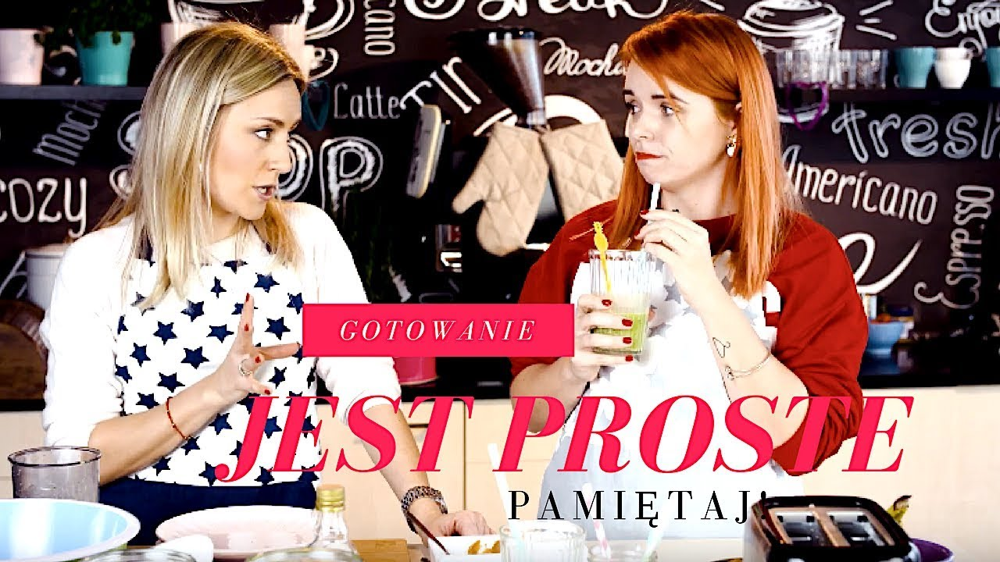

Najlepsze babeczki -2 proste przepisy - Swojskie jedzonko

Menu
Strona główna Przepisy Ciasta i Desery Sałatki Dla dzieci Na śniadanie Na obiad Mięso Zupy Przekąski Dodatki do dań Pieczywo Przetwory Wędliny domowe Na szczególne okazje Na imprezę Na grilla Torty Tłusty czwartek Wielkanoc Wigilia O mnie... Kontakt & Współpraca facebook instagram blogger pinterest piątek, 8 maja 2020Najlepsze babeczki -2 proste przepisy
ciasta i desery dla dzieciMoje ulubione przepisy,są ze mną od lat i bardzo często goszczą w mojej kuchni.Znikają błyskawicznie,bo wszyscy je uwielbiają.Do tego są banalnie proste do zrobienia i z prostych składników.Spróbujcie koniecznie,nie będziecie żałować.Idealnie do kawy na co dzień i od święta.Polecam Zobaczcie krótki film jak zrobić takie babeczki :
Babeczki bananowe z czekoladą :
Składniki: 225g-mąki pszennej 150g-cukru 1 łyżeczka proszku do pieczenia 1 łyżeczka sody szczypta soli 1 jajko 125 ml oleju 125 ml jogurtu naturalnego cukier waniliowy 2 bardzo dojrzałe banany-(nawet z brązową skórką-bo wtedy są bardzo aromatyczne i słodkie) 100g czekolady(jedna tabliczka) Przygotowanie:
W jednej misce mieszamy wszystkie suche składniki,czyli: mąkę,cukry,sodę,proszek do pieczenia,sól,posiekaną drobno nożem czekoladę, W drugiej misce mieszamy mokre składniki,czyli: olej,jogurt,jajko,i rozgniecione widelcem banany, Następnie wszystko mieszamy razem i gotowe-prawda ,że proste? napełniamy nasze foremki do babeczek ok-3/4 naszym ciastem(czyli niepełne) Pieczemy ok 20 min w temperaturze 180 stopni (góra dół),można je polać roztopioną czekoladą.
Babeczki pomarańczowe z białą czekoladą
Składniki: 275g mąki pszennej 2 płaskie łyżeczki proszku do pieczenia 80 g cukru pudru 1 opakowanie cukru waniliowego szczypta soli 125 ml mleka 80 ml oleju 1 jajko sok i starta skórka z jednej pomarańczy 1 tabliczka białej czekolady
dodatkowo: 200g cukru pudru do lukru Przygotowanie: Osobno mieszamy w misce suche składniki, a w drugiej mieszamy mokre składniki wraz ze skórką z pomarańczy i połową soku (drugą połowę wykorzystamy do lukru) Następnie połączyć suche składniki z mokrymi i dodać startą na tarce białą czekoladę,wymieszać. Masę dajemy do foremek silikonowych na babeczki lub papierowych papilotek do 3/4 wysokości. pieczemy w 170 stopniach z termoobiegiem 15-18 min jeśli nie macie termoobiegu to w 200 stopniach ok 15 min, resztę soku z pomarańczy i dodatkowy cukier puder mieszamy na gładki lukier polewamy nim lekko przestudzone babeczki smacznego!!
Tagi: ciasta i desery , dla dzieci , na szybko
Podziel się
Drukuj Udostępnij Przypnij Wyślij Nowszy post Starszy postZobacz również
3 komentarzy
Anonimowy 24 maja 2020 19:47ile babeczek wychodzi z poszczególnego przepisu? pozdrawiam
Odpowiedz Usuń Odpowiedzi Swojskie jedzonko - Katarzyna Michoń 24 maja 2020 22:03Ok 12-13 szt. pozdrawiam
Usuń Odpowiedzi Odpowiedz Anonimowy 25 maja 2020 01:46dziękuję! ;)
Usuń Odpowiedzi Odpowiedz Odpowiedz Dodaj komentarz Wczytaj więcej...
Dziękuję za każde zostawione słowo-pozdrawiam serdecznie i miłego dnia!!
NowszyPost Starszy
Post
Szukaj na tym blogu
O mnie
Nazywam się Kasia i gotowanie to moja ogromna pasja znajdziecie u mnie same sprawdzone przepisy na każdą okazję. Zapraszam do korzystania z przepisów i dzielenia się uwagami.Subskrybuj
youtube facebook instagram blogger pinterest newsletterOstatnio popularne
Sałatka z ogórków i papryki na zimę Pasztet pieczony z cukinii i marchewki Sos do spaghetti na zimę do słoików Zupa krem z zielonego groszku w kilka minut Syrop z mięty do słoików Amerykańska sałatka CobbNie przegap
footer social
facebook blogger instagram pinterestOpiekun bloga: WebLove.PL . Wszelkie prawa zastrzeżone - licencje . Katarzyna Michoń. Polityka prywaności & cookies .
Na górę